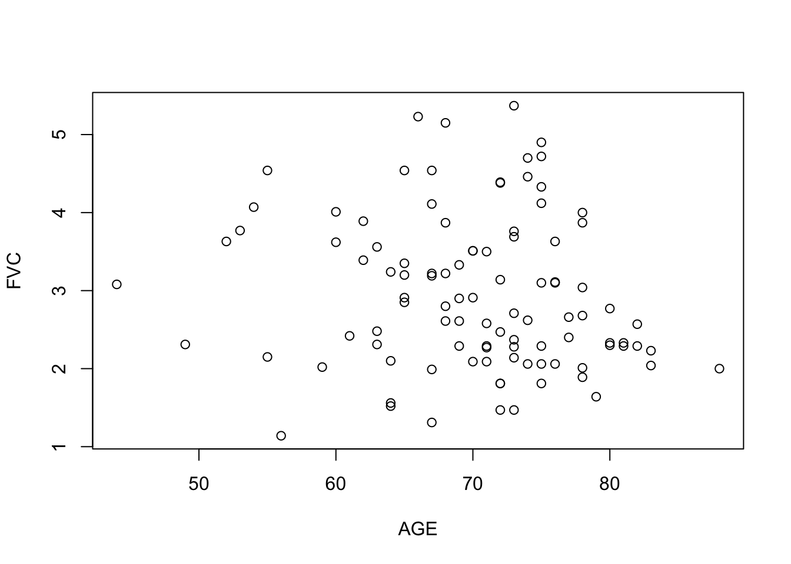
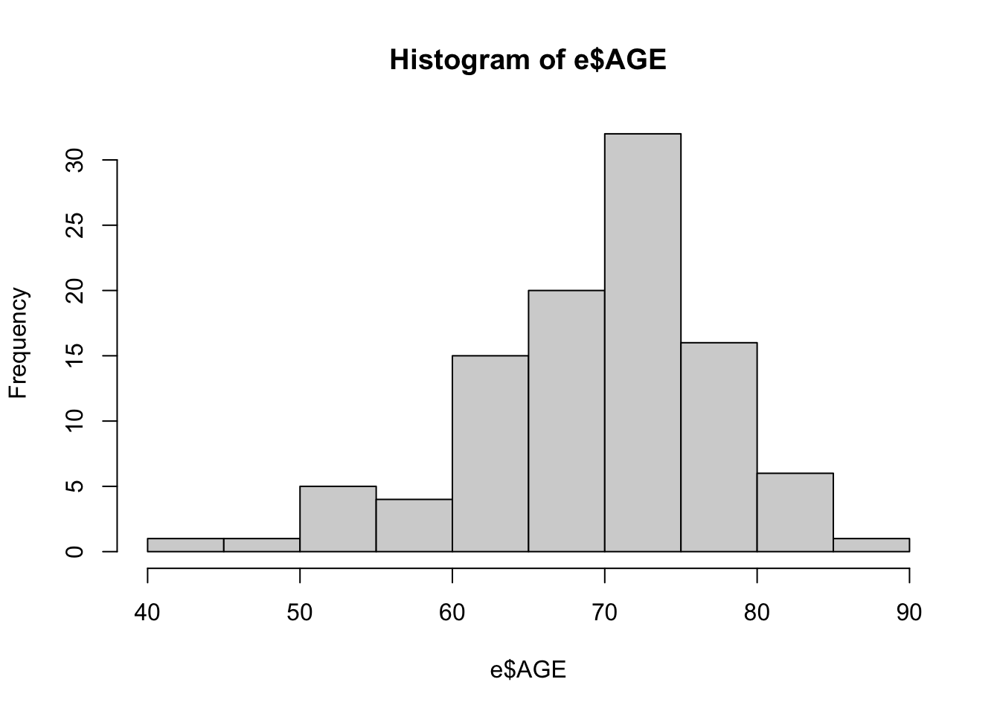
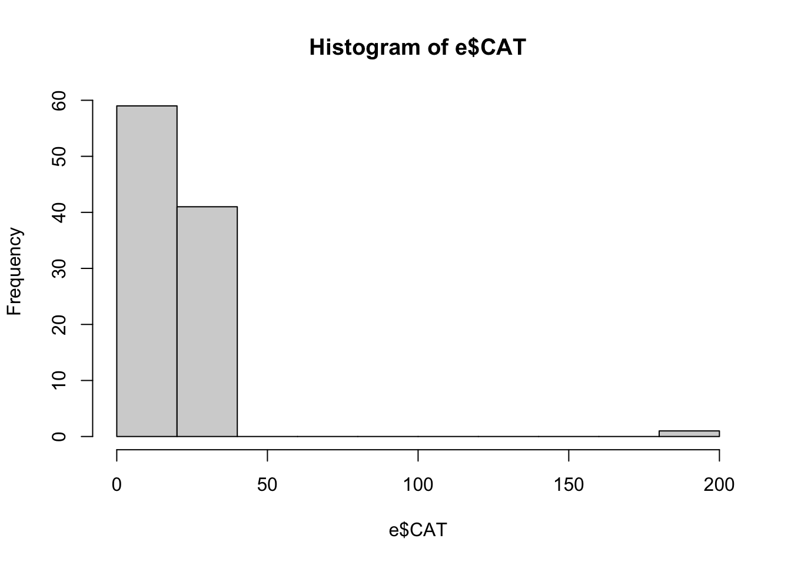
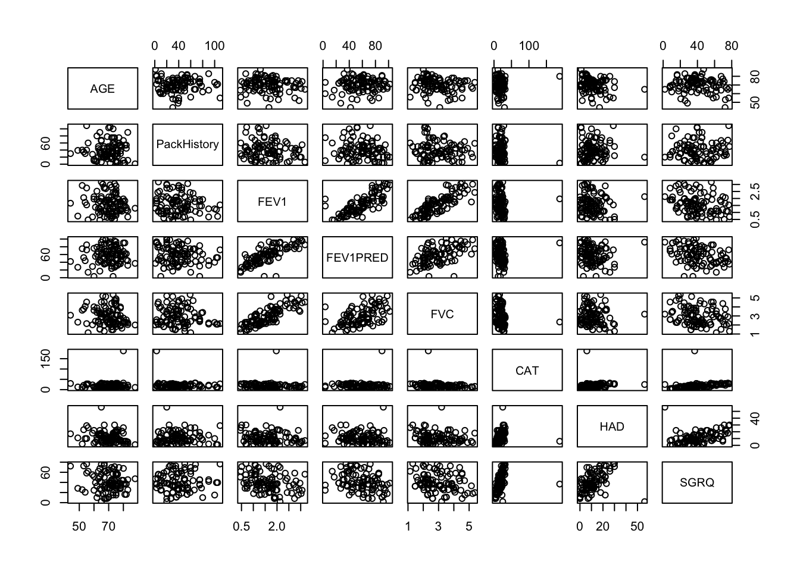
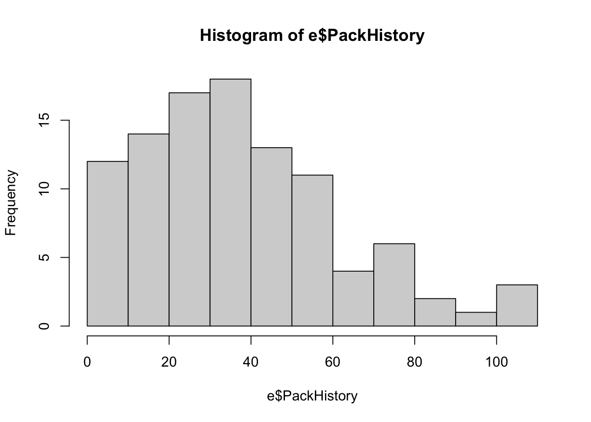

getwd()[1] "/Users/robertoramirezmartinez/Documents/1 COURSERA/C_Cursos RR/Quarto/book-porfoliov.1/files"This is an R Markdown document. Markdown is a simple formatting syntax for authoring HTML, PDF, and MS Word documents. For more details on using R Markdown see http://rmarkdown.rstudio.com.
When you click the Knit button a document will be generated that includes both content as well as the output of any embedded R code chunks within the document. You can embed an R code chunk like this:
getwd()[1] "/Users/robertoramirezmartinez/Documents/1 COURSERA/C_Cursos RR/Quarto/book-porfoliov.1/files"library(tidyverse)── Attaching core tidyverse packages ──────────────────────── tidyverse 2.0.0 ──
✔ dplyr 1.1.4 ✔ readr 2.1.6
✔ forcats 1.0.1 ✔ stringr 1.6.0
✔ ggplot2 4.0.1 ✔ tibble 3.3.0
✔ lubridate 1.9.4 ✔ tidyr 1.3.1
✔ purrr 1.2.0
── Conflicts ────────────────────────────────────────── tidyverse_conflicts() ──
✖ dplyr::filter() masks stats::filter()
✖ dplyr::lag() masks stats::lag()
ℹ Use the conflicted package (<http://conflicted.r-lib.org/>) to force all conflicts to become errors#e <- utils::read.csv("../datasets/COPD_dataset.csv")
e <- read_csv("../datasets/COPDdataset.csv")New names:
Rows: 101 Columns: 24
── Column specification
──────────────────────────────────────────────────────── Delimiter: "," chr
(1): COPDSEVERITY dbl (23): ...1, ID, AGE, PackHistory, MWT1, MWT2, MWT1Best,
FEV1, FEV1PRED, ...
ℹ Use `spec()` to retrieve the full column specification for this data. ℹ
Specify the column types or set `show_col_types = FALSE` to quiet this message.
• `` -> `...1`#e <- readr::read_csv(COPDdataset.csv)
#summary(e)
#install.packages("Hmisc")
#library(Hmisc)
summary(e) ...1 ID AGE PackHistory
Min. : 1 Min. : 1.00 Min. :44.0 Min. : 1.0
1st Qu.: 26 1st Qu.: 49.00 1st Qu.:65.0 1st Qu.: 20.0
Median : 51 Median : 87.00 Median :71.0 Median : 36.0
Mean : 51 Mean : 91.41 Mean :70.1 Mean : 39.7
3rd Qu.: 76 3rd Qu.:143.00 3rd Qu.:75.0 3rd Qu.: 54.0
Max. :101 Max. :169.00 Max. :88.0 Max. :109.0
COPDSEVERITY MWT1 MWT2 MWT1Best
Length:101 Min. :120.0 Min. :120.0 Min. :120.0
Class :character 1st Qu.:300.0 1st Qu.:303.8 1st Qu.:303.8
Mode :character Median :419.0 Median :399.0 Median :420.0
Mean :385.9 Mean :390.3 Mean :399.1
3rd Qu.:460.5 3rd Qu.:459.0 3rd Qu.:465.2
Max. :688.0 Max. :699.0 Max. :699.0
NA's :2 NA's :1 NA's :1
FEV1 FEV1PRED FVC FVCPRED
Min. :0.450 Min. : 3.29 Min. :1.140 Min. : 27.00
1st Qu.:1.100 1st Qu.: 42.00 1st Qu.:2.270 1st Qu.: 71.00
Median :1.600 Median : 60.00 Median :2.770 Median : 84.00
Mean :1.604 Mean : 58.53 Mean :2.955 Mean : 86.44
3rd Qu.:1.960 3rd Qu.: 75.00 3rd Qu.:3.630 3rd Qu.:103.00
Max. :3.180 Max. :102.00 Max. :5.370 Max. :132.00
CAT HAD SGRQ AGEquartiles
Min. : 3.00 Min. : 0.00 Min. : 2.00 Min. :1.000
1st Qu.: 12.00 1st Qu.: 6.00 1st Qu.:28.41 1st Qu.:1.000
Median : 18.00 Median :10.00 Median :38.21 Median :3.000
Mean : 19.34 Mean :11.18 Mean :40.19 Mean :2.475
3rd Qu.: 24.00 3rd Qu.:15.00 3rd Qu.:55.23 3rd Qu.:3.000
Max. :188.00 Max. :56.20 Max. :77.44 Max. :4.000
copd gender smoking Diabetes
Min. :1.000 Min. :0.0000 Min. :1.000 Min. :0.0000
1st Qu.:2.000 1st Qu.:0.0000 1st Qu.:2.000 1st Qu.:0.0000
Median :2.000 Median :1.0000 Median :2.000 Median :0.0000
Mean :2.198 Mean :0.6436 Mean :1.842 Mean :0.2079
3rd Qu.:3.000 3rd Qu.:1.0000 3rd Qu.:2.000 3rd Qu.:0.0000
Max. :4.000 Max. :1.0000 Max. :2.000 Max. :1.0000
muscular hypertension AtrialFib IHD
Min. :0.0000 Min. :0.0000 Min. :0.000 Min. :0.00000
1st Qu.:0.0000 1st Qu.:0.0000 1st Qu.:0.000 1st Qu.:0.00000
Median :0.0000 Median :0.0000 Median :0.000 Median :0.00000
Mean :0.1881 Mean :0.1188 Mean :0.198 Mean :0.08911
3rd Qu.:0.0000 3rd Qu.:0.0000 3rd Qu.:0.000 3rd Qu.:0.00000
Max. :1.0000 Max. :1.0000 Max. :1.000 Max. :1.00000
You can also embed plots, for example:

Note that the echo = FALSE parameter was added to the code chunk to prevent printing of the R code that generated the plot.
Remove previous variables: rm(list=ls()) Set the working directory: setwd(“file_pathway”) Loading a dataset, labelling it ‘COPD’: COPD <- read.csv(“COPD_student_dataset.csv”)
install.packages(“Package name”) library(Package name) install.packages(“Hmisc”) library(Hmisc)
#install.packages(“Hmisc”)
#library(Hmisc) Look at the whole dataset: View(COPD) Print the first few rows of your dataset: head(COPD) See how many rows and columns you have in your dataset: dim(COPD) Look at the different variables in the dataset: colnames(COPD) Look at all the values in a variable: print(variable) To visualise the structure of the data in a variable: str(variable) Look at a specific value (x) in a variable: variable[x]
For continuous variables:
View number of values, missing values, mean and ranges using the describe() function from the ‘Hmisc’ package. For categorical variables:
View number of values, missing values, mean and ranges using the describe() function from the ‘Hmisc’ package OR Tabulate the data to view the number of values and their frequency using the CrossTable() function from the ’gmodels package. To view missing values, type: sum(is.na(variable)). Viewing the categories and distribution of entries in a categorical variable: table(catvariable) You can add the argument exclude = NULL in the function parentheses to include missing values in the output.
#View(e)
head(e) # A tibble: 6 × 24
...1 ID AGE PackHistory COPDSEVERITY MWT1 MWT2 MWT1Best FEV1 FEV1PRED
<dbl> <dbl> <dbl> <dbl> <chr> <dbl> <dbl> <dbl> <dbl> <dbl>
1 1 58 77 60 SEVERE 120 120 120 1.21 36
2 2 57 79 50 MODERATE 165 176 176 1.09 56
3 3 62 80 11 MODERATE 201 180 201 1.52 68
4 4 145 56 60 VERY SEVERE 210 210 210 0.47 14
5 5 136 65 68 SEVERE 204 210 210 1.07 42
6 6 84 67 26 MODERATE 216 180 216 1.09 50
# ℹ 14 more variables: FVC <dbl>, FVCPRED <dbl>, CAT <dbl>, HAD <dbl>,
# SGRQ <dbl>, AGEquartiles <dbl>, copd <dbl>, gender <dbl>, smoking <dbl>,
# Diabetes <dbl>, muscular <dbl>, hypertension <dbl>, AtrialFib <dbl>,
# IHD <dbl>dim(e) [1] 101 24colnames(e) [1] "...1" "ID" "AGE" "PackHistory" "COPDSEVERITY"
[6] "MWT1" "MWT2" "MWT1Best" "FEV1" "FEV1PRED"
[11] "FVC" "FVCPRED" "CAT" "HAD" "SGRQ"
[16] "AGEquartiles" "copd" "gender" "smoking" "Diabetes"
[21] "muscular" "hypertension" "AtrialFib" "IHD" print(e$AGE) [1] 77 79 80 56 65 67 67 83 72 75 76 59 64 74 70 71 69 55 72 72 74 75 69 73 75
[26] 80 76 73 77 88 44 82 73 64 76 83 65 74 70 71 78 75 67 78 73 53 64 81 82 71
[51] 65 71 78 73 72 63 60 75 73 66 80 81 73 71 69 74 62 68 70 67 70 49 75 73 78
[76] 67 75 76 63 65 65 62 63 64 72 61 60 78 67 68 72 69 68 52 55 72 68 75 68 54
[101] 78str(e$AGE) num [1:101] 77 79 80 56 65 67 67 83 72 75 ...The basic format is:
modelname <- lm(outcome~predictor, data = dataframe) Viewing the regression model output: summary(modelname) Viewing the model 95% confidence intervals: confint(modelname) Drawing a Q-Q plot, constant variance plot, and other diagnostic plots
Calculate predicted values: predict(modelname) Calculate residuals: residuals(modelname) Set a plotting format of 4 graphs: par(mfrow=c(2,2)) View the 4 resulting plots: plot(modelname)
MWT1Best_edad <- lm(e$MWT1Best~e$AGE, datos = e) #1Warning: In lm.fit(x, y, offset = offset, singular.ok = singular.ok, ...) :
extra argument 'datos' will be disregardedsummary(MWT1Best_edad) #2
Call:
lm(formula = e$MWT1Best ~ e$AGE, datos = e)
Residuals:
Min 1Q Median 3Q Max
-257.44 -84.40 20.30 67.87 250.16
Coefficients:
Estimate Std. Error t value Pr(>|t|)
(Intercept) 616.453 93.440 6.597 2.14e-09 ***
e$AGE -3.104 1.326 -2.341 0.0213 *
---
Signif. codes: 0 '***' 0.001 '**' 0.01 '*' 0.05 '.' 0.1 ' ' 1
Residual standard error: 104.2 on 98 degrees of freedom
(1 observation deleted due to missingness)
Multiple R-squared: 0.05294, Adjusted R-squared: 0.04328
F-statistic: 5.478 on 1 and 98 DF, p-value: 0.02128confint(MWT1Best_edad) #3 2.5 % 97.5 %
(Intercept) 431.023080 801.8819906
e$AGE -5.735718 -0.4722946MWT1Best_gender <- lm(e$MWT1Best~e$gender, datos = e) #1Warning: In lm.fit(x, y, offset = offset, singular.ok = singular.ok, ...) :
extra argument 'datos' will be disregardedsummary(MWT1Best_gender) #2
Call:
lm(formula = e$MWT1Best ~ e$gender, datos = e)
Residuals:
Min 1Q Median 3Q Max
-290.09 -87.96 18.66 74.92 288.91
Coefficients:
Estimate Std. Error t value Pr(>|t|)
(Intercept) 379.58 17.68 21.473 <2e-16 ***
e$gender 30.51 22.10 1.381 0.17
---
Signif. codes: 0 '***' 0.001 '**' 0.01 '*' 0.05 '.' 0.1 ' ' 1
Residual standard error: 106.1 on 98 degrees of freedom
(1 observation deleted due to missingness)
Multiple R-squared: 0.01908, Adjusted R-squared: 0.009073
F-statistic: 1.906 on 1 and 98 DF, p-value: 0.1705confint(MWT1Best_gender) #3 2.5 % 97.5 %
(Intercept) 344.50270 414.66397
e$gender -13.34038 74.36121The basic format is: hist(variablename) If you are getting a variable from the dataset, the $ sign allows R to locate this variable. E.g. COPD$MWT1Best To change the title of the histogram, use the command: main = “histogram title” Don’t forget quotation marks when using text! To change the x or y axes labels, use the commands: xlab = “x axis label” or ylab = “y axis label” Don’t forget quotation marks using text! To change the number of bins displayed, use the command main = to specify the number of bins you want to see. To look at specific values in your variable, you can use the subset() function, using the basic code subset(dataframe, variable > 15) if you want to see values over 15 for that variable. You can add additive rules by including ‘|’, e.g. subset(dataframe, variable1 > 15 | variable2 < 5)
Basic summary statistics (incl. minimum, medium, maximum, 1st and 3rd quartiles, and number of blank cells): summary(variablename) List of summary statistics, including the basic summary() outcome, standard deviation, range, and inter-quartile range:
list(summary(variablename), sd(variablename, na.rm = TRUE), range(variablename, na.rm = TRUE), IQR(variablename, na.rm = TRUE)) Note that the na.rm = TRUE command tells R to remove NA values. Without this, an error message will be displayed.
Scatterplot of two variables: plot(x, y) Correlation coefficient: cor(x, y) The default method is Pearson, but you can change this to Spearman by adding method = “spearman” in your parentheses. You need to remove missing values, otherwise you will get an error message. To do this, add use = “complete.obs” in your parentheses. Correlation test: cor.test(x, y) The default method is also Pearson here. You also need to remove missing values to avoid an error message.
Create a vector with the variables to include in the matrix, e.g. data <- COPD[,c(“AGE”, “PackHistory”, “FEV1”)] Create the correlation matrix vector, assigning correlation coefficients of the different variables to it, e.g. cor_matrix <- cor(data) View the matrix: e.g. cor_matrix to view the output and round(cor_matrix,2) to round this output to 2 decimal points. Visualising correlation between variables, i.e. correlation plot: pairs(~ variable1 + variable2 + variable3, data = dataframe)
The basic format is:
modelname <- lm(outcome~predictor1 + predictor2, data = dataframe) Viewing the regression model output: summary(modelname) Viewing the model 95% confidence intervals: confint(modelname) Examining the VIF using the imcdiagF() function from the ‘mctest’ package. Regression with categorical variables
2 ways to do this:
Check what the variable is saved as, change it to a factor variable if it is not saved as such. Check what the variable has been saved as using the class() function If it is not saved as a factor, can it using the factor() command, in the following format: variable <- factor(variable) Run the regression as normal Include factor() before the variable in the regression model. E.g. modelname <- lm(outcome~predictor1 + factor(predictor2), data = dataframe) Changing the reference category of a variable:
Use the relevel() function in the following format: variable <- relevel(variable, ref = newreflevel) with the newreflevel being the new reference level, written either as a numeric (1, 2, 3, …) or a character (in which case it needs to be written within apostrophes – “MILD”, “SEVERE”, …)
Check what the variable has been as using the class() function. Changing data type: To numeric: as.numeric() To character: as.character() To factor: factor() or as.factor() To integer: as.integer()
comorbid is a variable you were asked to create. This variable was to be binary, and indicated the presence of at least one comorbidity (‘1’) or complete absence of comorbidities (‘0’) based on the responses to the variables: Diabetes, muscular, hypertension, AtrialFib, and IHD.
Check that all variables are saved as the correct datatype. Create an empty vector of the correct length. Here, comorbid will be the same length as the other variables, so: comorbid <- length(COPD\(Diabetes)
Assign values to this vector.
Here, we want comorbid = 1 when Diabetes OR muscular OR hypertension OR AtrialFib OR IHD = 1. So: comorbid[COPD\)Diabetes == 1 | COPD\(muscular == 1 | COPD\)hypertension == 1 | COPD\(AtrialFib == 1 | COPD\)IHD == 1] <- 1
This will assign 1 to the values meeting the set conditions, and NAs to those that are not meeting those conditions. We also want comorbid = 0 when ALL above variables = 0. So: comorbid[is.na(cormorbid)] <- 0 Convert this variable to a factor. Optional: add the variable to the dataset, using the following command COPD$comorbid <- cormorbid
Use the same format as a multiple linear regression, but include both terms, i.e. modelname <- lm(outcome~predictor1 + predictor2 + (predictor1 * predictor2),
data = dataframe) Interpretation of the interaction effect can be simplified using the prediction() function from the ‘prediction’ package.
Feedback The first step is to produce the simple linear regression model between MWT1best and FVC. In R the code is:
lr1 <- lm(MWT1Best~FVC, data = e)
summary(lr1)
Call:
lm(formula = MWT1Best ~ FVC, data = e)
Residuals:
Min 1Q Median 3Q Max
-251.663 -66.598 6.364 63.539 246.125
Coefficients:
Estimate Std. Error t value Pr(>|t|)
(Intercept) 254.951 30.779 8.283 6.28e-13 ***
FVC 48.630 9.866 4.929 3.37e-06 ***
---
Signif. codes: 0 '***' 0.001 '**' 0.01 '*' 0.05 '.' 0.1 ' ' 1
Residual standard error: 95.87 on 98 degrees of freedom
(1 observation deleted due to missingness)
Multiple R-squared: 0.1987, Adjusted R-squared: 0.1905
F-statistic: 24.29 on 1 and 98 DF, p-value: 3.368e-06confint(lr1) 2.5 % 97.5 %
(Intercept) 193.87101 316.03072
FVC 29.05061 68.20964lr1 <- lm(MWT1Best~FVC, data = COPD) # Run the regression, assigning the output to a new variable lr
summary(lr1) # View the output of the regression
confint(lr1) # View the 95% confidence intervals of the regression
N.B. The text following the # sign are comments to describe what the command is doing. It has no effect on the output.
This produces the following output:
undefined
This has fitted the following model:
MWT1best= α+β∗FVC
where
α = 254.95 and β=48.63 and adjusted R2 = 0.19.
You should have already fitted the model between MWT1best and AGE and found the following: lr2 <- lm(MWT1Best~AGE, data = COPD)
lr2 <- lm(MWT1Best~AGE, data = e)
summary(lr2)
Call:
lm(formula = MWT1Best ~ AGE, data = e)
Residuals:
Min 1Q Median 3Q Max
-257.44 -84.40 20.30 67.87 250.16
Coefficients:
Estimate Std. Error t value Pr(>|t|)
(Intercept) 616.453 93.440 6.597 2.14e-09 ***
AGE -3.104 1.326 -2.341 0.0213 *
---
Signif. codes: 0 '***' 0.001 '**' 0.01 '*' 0.05 '.' 0.1 ' ' 1
Residual standard error: 104.2 on 98 degrees of freedom
(1 observation deleted due to missingness)
Multiple R-squared: 0.05294, Adjusted R-squared: 0.04328
F-statistic: 5.478 on 1 and 98 DF, p-value: 0.02128confint(lr2) 2.5 % 97.5 %
(Intercept) 431.023080 801.8819906
AGE -5.735718 -0.4722946summary(lr2)
confint(lr2)
undefined where
α = 616.45 and β=−3.10, and adjusted R2 = 0.04.
Once you know how to fit a simple linear regression model it should be straightforward fitting the multiple linear regression model. To do this in R you issue the follow command:
lr3 <- lm(MWT1Best~FVC+AGE, data = COPD)
lr3 <- lm(MWT1Best~FVC+AGE, data = e)
summary(lr3)
Call:
lm(formula = MWT1Best ~ FVC + AGE, data = e)
Residuals:
Min 1Q Median 3Q Max
-236.89 -66.05 12.55 75.54 211.72
Coefficients:
Estimate Std. Error t value Pr(>|t|)
(Intercept) 425.377 94.099 4.521 1.74e-05 ***
FVC 46.058 9.827 4.687 9.06e-06 ***
AGE -2.325 1.215 -1.914 0.0586 .
---
Signif. codes: 0 '***' 0.001 '**' 0.01 '*' 0.05 '.' 0.1 ' ' 1
Residual standard error: 94.59 on 97 degrees of freedom
(1 observation deleted due to missingness)
Multiple R-squared: 0.2278, Adjusted R-squared: 0.2119
F-statistic: 14.31 on 2 and 97 DF, p-value: 3.588e-06confint(lr3) 2.5 % 97.5 %
(Intercept) 238.616666 612.13818023
FVC 26.553107 65.56260023
AGE -4.736637 0.08649919summary(lr3)
confint(lr3)
undefined This has fitted the following model:
MWT1best= α+β1∗FVC+ β2∗AGE
where α = 425.38, β1=46.06 and β2 = -2.33.
Comparing the output from the multiple regression model with the two models with single predictor variables you can see that both coefficients have slightly reduced in the multiple regression model.
The FVC coefficient has reduced from 48.6 to 46.1, and the AGE coefficient has reduced from -3.1 to -2.3. You might have also noticed that the p-value for FVC remains small (<0.001) but the p-value for AGE has increased to 0.059. Remember, this change is because the coefficients are now adjusted coefficients:
α is the estimated walking distance you would expect for people aged 0 years and with a FVC value of 0.
β1 is the average increase in walking distance for every one unit increase in FVC, keeping age held constant.
β2 is the average increase in walking distance for every one year increase in age, keeping FVC held constant.
Comparing the adjusted-R2 statistics you can see that the multivariable model now explains 21% of variance in the data compared with 19% for the model with FVC and 4% for the model with AGE.
Whilst the adjusted R2 statistic is marginally higher in this model with both FVC and AGE compared with the model with just FVC, you might question the inclusion of AGE given the p-value of 0.059, which does not allow you to reject the null hypothesis that the coefficient is 0 at the usual 5% significance threshold. Put that thought on hold for now. You’ll cover model development and variable selection later in the course and you will see that this should not solely rely on significance testing.
Your model doesn’t seem to show any indication of collinearity (remember that this is when there is a strong linear relationship between predictors that causes problems in estimation of model parameters). You can check this by examining the scatterplot or calculating a correlation coefficient such as Pearson’s or Spearman’s when there are only two predictors. However, this is not possible when the number of predictors increases beyond two. In that situation, you will need to produce a correlation matrix or calculate the Variance Inflation Factor (VIF), both of which will be covered later in the course.
Looking at the scatterplot between AGE and FVC you should see a fairly random scatter of points like below:
plot(COPD\(AGE, COPD\)FVC, xlab =“AGE”, ylab =“FVC”)
plot(e$AGE, e$FVC, xlab ="AGE", ylab ="FVC") 
undefined Calculating the Spearman’s correlation you should get -0.18. Therefore, there is only a very weak association between AGE and FVC, so collinearity is unlikely to be an issue. This is obtained by issuing the following command in R:
cor.test(COPD\(AGE, COPD\)FVC, use=“complete.obs”, method=“spearman”)
cor.test(e$AGE, e$FVC, use="complete.obs", method="spearman") Warning in cor.test.default(e$AGE, e$FVC, use = "complete.obs", method =
"spearman"): Cannot compute exact p-value with ties
Spearman's rank correlation rho
data: e$AGE and e$FVC
S = 202110, p-value = 0.07642
alternative hypothesis: true rho is not equal to 0
sample estimates:
rho
-0.1771108 So, now that you’re satisfied that collinearity is not a problem, you need to check the other model assumptions.
Hopefully, you recalled that these are: 1) there is linearity between the outcome and predictor variables; (2) that the outcome variable is normally distributed across values of the predictors; and (3) that the variance of the outcome variable is constant across values of the predictor variables. Even with multiple predictors, if these assumptions are satisfied then the residuals (distance between the observed values and the fitted regression line) follow a normal distribution with mean zero and constant variance across the predictor values:
Residuals ~ Normal (0, σ2)
You can assess this by examining the appropriate plots.
Imagine you fit the following model:
MWT1best= α+β1∗FVC+ β2∗AGE+ β3 ∗FEV1
Can you think why this might not be a good idea?
FVC and FEV1 are both measures of lung function. Have a go and see what you get.
MWT1Best_gender<- lm(e$MWT1Best~e$gender, data = e)
summary(MWT1Best_gender)
Call:
lm(formula = e$MWT1Best ~ e$gender, data = e)
Residuals:
Min 1Q Median 3Q Max
-290.09 -87.96 18.66 74.92 288.91
Coefficients:
Estimate Std. Error t value Pr(>|t|)
(Intercept) 379.58 17.68 21.473 <2e-16 ***
e$gender 30.51 22.10 1.381 0.17
---
Signif. codes: 0 '***' 0.001 '**' 0.01 '*' 0.05 '.' 0.1 ' ' 1
Residual standard error: 106.1 on 98 degrees of freedom
(1 observation deleted due to missingness)
Multiple R-squared: 0.01908, Adjusted R-squared: 0.009073
F-statistic: 1.906 on 1 and 98 DF, p-value: 0.1705confint(MWT1Best_gender) 2.5 % 97.5 %
(Intercept) 344.50270 414.66397
e$gender -13.34038 74.36121MWT1Best_gender = 379.7+ 30.5Gender The regression coefficient for “gender” represents the expected chance in our outcome, “walking distance”, for a one unit increase in our predictor. Predicted mean in males. MWT1Best_gender = 379.7+ 30.51 = 410.1 Predicted mean in females. MWT1Best_gender = 379.7+ 30.5*0= 379.7
w <- table(e$COPDSEVERITY)
w
MILD MODERATE SEVERE VERY SEVERE
23 43 27 8 t <- as.data.frame(w)
t Var1 Freq
1 MILD 23
2 MODERATE 43
3 SEVERE 27
4 VERY SEVERE 8MWT1Best_COPDSEVERITY<- lm(e$MWT1Best~e$COPDSEVERITY, data = e)
summary(MWT1Best_COPDSEVERITY)
Call:
lm(formula = e$MWT1Best ~ e$COPDSEVERITY, data = e)
Residuals:
Min 1Q Median 3Q Max
-248.67 -51.18 0.91 64.23 330.33
Coefficients:
Estimate Std. Error t value Pr(>|t|)
(Intercept) 458.09 20.44 22.410 < 2e-16 ***
e$COPDSEVERITYMODERATE -51.09 25.43 -2.009 0.04735 *
e$COPDSEVERITYSEVERE -89.42 27.82 -3.215 0.00178 **
e$COPDSEVERITYVERY SEVERE -167.21 40.24 -4.156 7.05e-05 ***
---
Signif. codes: 0 '***' 0.001 '**' 0.01 '*' 0.05 '.' 0.1 ' ' 1
Residual standard error: 98.03 on 96 degrees of freedom
(1 observation deleted due to missingness)
Multiple R-squared: 0.1792, Adjusted R-squared: 0.1535
F-statistic: 6.984 on 3 and 96 DF, p-value: 0.0002671confint(MWT1Best_COPDSEVERITY) 2.5 % 97.5 %
(Intercept) 417.5118 498.6621125
e$COPDSEVERITYMODERATE -101.5638 -0.6101082
e$COPDSEVERITYSEVERE -144.6361 -34.2044964
e$COPDSEVERITYVERY SEVERE -247.0842 -87.3396822The regression coefficients here show how much walking distance changes for moderate, severe and very severe, all compared to mild disease. The coefficients are all negative, suggesting that walking distance decreases as disease severity increases, and the magnitude increases with increasing severity.
When handed a new data set, before you do any analysis or model fit, you must always get to know and inspect your data! The main things you should be doing are:
What type of variable are they? What are the ranges of each variable? What distributions do they follow? 2. Checking that the variables are in the correct format when imported into R
Getting to know your data set
You can see how many row and columns you have in your data set with the following command:
dim(e)[1] 101 24R gives the number of rows and columns, in that order. There are 101 rows (patients) and 24 columns (variables).
Let’s now look at what variables there are. You could do this by printing out the whole data set by simply typing COPD, but as it’s quite large and will clutter the R console, instead just print the first few rows:
head(e)# A tibble: 6 × 24
...1 ID AGE PackHistory COPDSEVERITY MWT1 MWT2 MWT1Best FEV1 FEV1PRED
<dbl> <dbl> <dbl> <dbl> <chr> <dbl> <dbl> <dbl> <dbl> <dbl>
1 1 58 77 60 SEVERE 120 120 120 1.21 36
2 2 57 79 50 MODERATE 165 176 176 1.09 56
3 3 62 80 11 MODERATE 201 180 201 1.52 68
4 4 145 56 60 VERY SEVERE 210 210 210 0.47 14
5 5 136 65 68 SEVERE 204 210 210 1.07 42
6 6 84 67 26 MODERATE 216 180 216 1.09 50
# ℹ 14 more variables: FVC <dbl>, FVCPRED <dbl>, CAT <dbl>, HAD <dbl>,
# SGRQ <dbl>, AGEquartiles <dbl>, copd <dbl>, gender <dbl>, smoking <dbl>,
# Diabetes <dbl>, muscular <dbl>, hypertension <dbl>, AtrialFib <dbl>,
# IHD <dbl>It looks like a good mix of variable types: continuous, binary, categorical.
Getting to know your variables
It’s very important to inspect each variable individually, especially, those which you think you will use in your analyses!
In this exercise, you will learn how to do this for each variable type. Start with a continuous variable, age:
First - check the variable type with the command class():
#class(e$AGE)R tells you it is an “integer” variable. Technically, age is a continuous variable, but patient age is recorded to the year in the data set. This is OK for your purposes - R will treat this variable as a continuous one, unless you tell it otherwise.
The summary()command gives a summary of the age variable.
#summary(e$AGE)The median age of the patient sample is 71 years, the youngest is 44 and the highest is 88. This command would also tell you if there are any missing values; you do not have any here.
The median and mean values are closer to the max value, which would suggest a negative skew.
You can graphically look at the distribution of ages with the **hist()* command:
class(e$AGE)[1] "numeric"summary(e$AGE) Min. 1st Qu. Median Mean 3rd Qu. Max.
44.0 65.0 71.0 70.1 75.0 88.0 hist(e$AGE)
There does indeed seem to be a slight negative skew to our patient ages: the tail at the lower end is longer than the tail at the upper end.
The same set of commands can be used for other continuous variables, like so with CAT score CAT:
class(e$CAT)[1] "numeric"summary(e$CAT) Min. 1st Qu. Median Mean 3rd Qu. Max.
3.00 12.00 18.00 19.34 24.00 188.00 hist(e$CAT)
Both the summary() and hist() commands reveal something strange about the entries in this variable. There is an outlier here, at 188. In fact, CAT scores can only be between 0 and 40, so there is a mistake in your data set. Real life data sets are often full of mistakes; it is, therefore, important to spot these errors early and make decisions before you start your analyses.
Next, you will inspect a categorical variable, COPDSEVERITY. Check that it is in the right format:
class(e$COPDSEVERITY)[1] "character"COPDSEVERITY is in the “factor” format which is the way R treats categorical data.
Now, you can have a look at the distribution of entries, using the table() command to do so.
table(e$COPDSEVERITY, exclude = NULL)
MILD MODERATE SEVERE VERY SEVERE
23 43 27 8 Including the argument exclude = NULL asks R to include missing values in the output. For this variable, you have no missing values. you do have more patients in the ‘MODERATE’ category than any of the others.
Binary variables are treated similarly to categorical variables. R will by default treat variables with numbers as integers, so it’s good practice to make sure R knows that a variable is meant to be categorical with the following procedure.
class(e$gender) [1] "numeric"e$gender <- as.factor(e$gender)
class(e$gender) [1] "factor"Now, gender is registered as a categorical variable and will be treated properly in any models you create. You can see the distribution of gender in the same way as any other categorical variable.
table(e$gender, exclude = NULL)
0 1
36 65 As mentioned before, these basic inspections must be performed before you jump into any analyses!
So, you now have the tools to perform all inspections necessary for all of the variables in this data set.
### How to check your data in R
Checking what type of data R saved the variable as:
Open RStudio and load your dataset To check what type of data the different variables have been saved as, you can use the class() function The most common types of data are: Numeric—-Decimal values Integer—Numeric value with no fraction Character–Text/String variables, enclosed by apostrophes Logical —Objects (TRUE or FALSE) that encode a logic Factor —Categorical/nominal variables, with levels of data
So, for example, if you look at some of the variables in the COPD dataset, you will see that:
AGE is saved as an integer variable SGRQ is saved as a numeric variable COPDSEVERITY is saved as a factor variable, with 4 levels: mild, moderate, severe, very severe
class(e$AGE)[1] "numeric"class(e$SGRQ)[1] "numeric"class(e$COPDSEVERITY)[1] "character"Changing data type for a variable
With your outcome variable, MWT1Best, being a numerical variable and your predictor variable, copd, a categorical variable with 4 levels.
class(COPD$MWT1Best)
class(COPD$copd)
class(e$copd) # look at the variable category for copd tin the e dataset[1] "numeric"e$copd <- factor(e$copd) # convert copd to a factor variable
class(e$copd) # look at the variable category for copd in the e dataset [1] "factor"To visualise the structure of the data in that variable, you can use the str() function:
str(e$copd) # List th structure of the data in the variable copd (in the e dataset) Factor w/ 4 levels "1","2","3","4": 3 2 2 4 3 2 3 3 2 3 ...str(e$COPDSEVERITY) chr [1:101] "SEVERE" "MODERATE" "MODERATE" "VERY SEVERE" "SEVERE" ...Now, if you run your regression, you will get an output for three of the levels of the copd variable:
lr1<- lm(e$MWT1Best~e$copd, data = e) # Run linear regresion : MWT1Best = alfa + beta*copd
summary(lr1) # View th output of the regression
Call:
lm(formula = e$MWT1Best ~ e$copd, data = e)
Residuals:
Min 1Q Median 3Q Max
-248.67 -51.18 0.91 64.23 330.33
Coefficients:
Estimate Std. Error t value Pr(>|t|)
(Intercept) 458.09 20.44 22.410 < 2e-16 ***
e$copd2 -51.09 25.43 -2.009 0.04735 *
e$copd3 -89.42 27.82 -3.215 0.00178 **
e$copd4 -167.21 40.24 -4.156 7.05e-05 ***
---
Signif. codes: 0 '***' 0.001 '**' 0.01 '*' 0.05 '.' 0.1 ' ' 1
Residual standard error: 98.03 on 96 degrees of freedom
(1 observation deleted due to missingness)
Multiple R-squared: 0.1792, Adjusted R-squared: 0.1535
F-statistic: 6.984 on 3 and 96 DF, p-value: 0.0002671NOTE: there are only coefficients for three of the levels because the coefficients represent the comparison with the fourth level, which is often referred to as the reference group.
Changing the reference category of a categorical variable
lr1<- lm(e$MWT1Best~e$copd, data = e) # Run linear regresion : MWT1Best = alfa + beta*copd
summary(lr1) # View th output of the regression
Call:
lm(formula = e$MWT1Best ~ e$copd, data = e)
Residuals:
Min 1Q Median 3Q Max
-248.67 -51.18 0.91 64.23 330.33
Coefficients:
Estimate Std. Error t value Pr(>|t|)
(Intercept) 458.09 20.44 22.410 < 2e-16 ***
e$copd2 -51.09 25.43 -2.009 0.04735 *
e$copd3 -89.42 27.82 -3.215 0.00178 **
e$copd4 -167.21 40.24 -4.156 7.05e-05 ***
---
Signif. codes: 0 '***' 0.001 '**' 0.01 '*' 0.05 '.' 0.1 ' ' 1
Residual standard error: 98.03 on 96 degrees of freedom
(1 observation deleted due to missingness)
Multiple R-squared: 0.1792, Adjusted R-squared: 0.1535
F-statistic: 6.984 on 3 and 96 DF, p-value: 0.0002671If you wanted to use the ‘severe’ group as a reference category for COPD severity (i.e. level 3), you can use the relevel() function:
COPD\(copd <- relevel(COPD\)copd, ref=3)
The output now becomes:
e$copd <- relevel(e$copd, ref=3)
lr1<- lm(e$MWT1Best~e$copd, data = e) # Run linear regresion : MWT1Best = alfa + beta*copd
summary(lr1) # View th output of the regression
Call:
lm(formula = e$MWT1Best ~ e$copd, data = e)
Residuals:
Min 1Q Median 3Q Max
-248.67 -51.18 0.91 64.23 330.33
Coefficients:
Estimate Std. Error t value Pr(>|t|)
(Intercept) 368.67 18.87 19.541 < 2e-16 ***
e$copd1 89.42 27.82 3.215 0.00178 **
e$copd2 38.33 24.18 1.585 0.11620
e$copd4 -77.79 39.46 -1.971 0.05157 .
---
Signif. codes: 0 '***' 0.001 '**' 0.01 '*' 0.05 '.' 0.1 ' ' 1
Residual standard error: 98.03 on 96 degrees of freedom
(1 observation deleted due to missingness)
Multiple R-squared: 0.1792, Adjusted R-squared: 0.1535
F-statistic: 6.984 on 3 and 96 DF, p-value: 0.0002671NOTE: this function only works with variables saved as factors!
Create new variables from old ones
You now want to create a new variable, which indicates the presence of at least one comorbidity or complete absence of comorbidities, based on the responses to the variables: Diabetes, muscular, hypertension, AtrialFib, and IHD.
Call this variable ‘comorbid’.
str(e$Diabetes) num [1:101] 1 1 1 0 0 1 1 1 1 0 ...str(e$muscular) num [1:101] 0 0 0 0 1 0 0 0 0 1 ...str(e$hypertension) num [1:101] 0 0 0 1 1 0 0 0 0 0 ...str(e$AtrialFib) num [1:101] 1 1 1 1 0 1 1 1 1 0 ...str(e$IHD) num [1:101] 0 1 0 0 0 0 0 0 0 0 ...e$copd <- factor(e$copd)
e$Diabetes <- factor(e$Diabetes)
e$muscular <- factor(e$muscular)
e$hypertension <- factor(e$hypertension)
e$AtrialFib <- factor(e$AtrialFib)
e$IHD <- factor(e$IHD)str(e$Diabetes) Factor w/ 2 levels "0","1": 2 2 2 1 1 2 2 2 2 1 ...str(e$muscular) Factor w/ 2 levels "0","1": 1 1 1 1 2 1 1 1 1 2 ...str(e$hypertension) Factor w/ 2 levels "0","1": 1 1 1 2 2 1 1 1 1 1 ...str(e$AtrialFib) Factor w/ 2 levels "0","1": 2 2 2 2 1 2 2 2 2 1 ...str(e$IHD) Factor w/ 2 levels "0","1": 1 2 1 1 1 1 1 1 1 1 ...comorbid <- length(e$Diabetes) # create a new vector called "comorbid", of the Diabetes variable i.e 101.
comorbid[e$Diabetes == 1 | e$muscular == 1 | e$hypertension == 1 | e$AtrialFib == 1 | e$IHD == 1] <- 1
# Assign a value of 1 in the comorbid vector if the variable Diabetes = 1 OR if the variable muscular = 1 OR if the variable Hypertension = 1 OR if the variable Atrialfib = 1 OR if the variable IDH = 1
comorbid[is.na(comorbid)] <- 0 # assign a value of 0 in the comorbid vector to the NA values in the vector
comorbid <- factor(comorbid) # Convert comorbid a factorOnce you have done this, there are different ways you can look at your data. You can:
print(comorbid) # looks at the data in the vector comorbid [1] 1 1 1 1 1 1 1 1 1 1 1 1 1 1 0 0 1 0 0 0 0 0 0 1 0 0 0 1 1 1 0 1 1 0 0 0 1
[38] 1 1 1 0 0 1 1 0 1 1 1 1 0 1 1 0 1 1 1 1 1 0 1 1 1 1 0 0 1 1 0 0 0 0 0 0 1
[75] 0 0 0 0 1 0 1 1 0 0 1 0 0 1 0 0 0 0 0 0 1 1 1 1 1 0 0
Levels: 0 1str(comorbid) # look at the structure of the data in the vector comorbid Factor w/ 2 levels "0","1": 2 2 2 2 2 2 2 2 2 2 ...comorbid[15] # look at the 15th value in the vector comorbid.[1] 0
Levels: 0 1If you want to add this new variable to your existing dataset (COPD), you can do so using the following command:
COPD$comorbid <- comorbid
e$comorbid <- comorbidBelow are good practice steps you should go through before fitting a multivariable linear regression model.
The good practice steps to develop a multivariable linear regression model are:
This helps you identify and quantify the amount of missing information. It also helps you spot any strange or outlying observations.
If you do spot any strange values you will need to decide what to do with them before you move on.
This helps you identify potential associations in your candidate predictor variables that could be problematic if included together in your multivariable model.
This allows you to assess the relationship between each of your candidate predictor variables and the outcome variable. Again, this helps to spot errors in either the data or the coding, and it also allows you to anticipate what you might expect to happen when you fit the multivariable model.
Once you’ve done this you’re in a much better position to start thinking about building a multivariable regression model.
You have already learned how to fit a regression model in R and interpret the results for continuous and categorical variables.
You’ve also examined a few selected predictors but, in practice, there are often many candidate predictors. Decisions need to be made about whether variables are suitable to include, which of them to include, and how to include them for your analysis. If you have a lot of variables, it’s quite easy to get lost in a ‘forest of results’.
So, you are going to go through some good practice approaches that will help you to check your data and organise your analysis.
Working with the COPD_student dataset, which is a modest dataset with regards to the number of variables included, you’ll still have quite a lot to examine here. The different variables can be categorised as such:
$ The dataset contains variables on 4 patient characteristics: ‘age’; ‘gender’; ‘pack history’; and ‘smoking’.
There are two measures of disease severity: ‘COPD severity score’; and the variable ‘CAT’ which stands for COPD Assessment Test.
There are 4 measures of lung function; ‘FEV1’ which, as you know, is the amount of air a person can exhale in one second, whereas ‘FVC’ is the amount of air a person can exhale after taking a deep breath.
The two variables ‘FEV1PRED’ and ‘FVCPRED’ are the percentage of the predicted normal for a person of the same ‘gender’, ‘age’ and ‘height’.
Then there are also measures for ‘anxiety and depression’, ‘quality of life’ and the presence of comorbidities.
The first thing to do is to examine the datatype and distribution for all of these variables. This can be done using the describe() function from the ‘Hmisc’ package. This function allows you to examine the different variables, providing the number of values, the range of the values, the number of missing values, the mean, and the different quartiles of values in our variables.
After you’ve downloaded the package, you can type the command describe(COPD). This should be your output:
#install.packages(Hmisc)
#library(Hmisc)
#describe(e)You may then want to examine each variable in more detail using summary statistics and tabulations. These allow you to spot missing data or outliers, which you might need to exclude for the next stages of your analysis.
For categorical variables, you can tabulate the data using the *CrossTable() function from the ‘gmodels’ package, then use the sum(is.na())** functions to check for missing values. In cases where there are none, you should query the investigator as to whether or not any participants with missing values have been excluded prior to getting the dataset. In this data set you would also ask about how the comorbidity data was collected.
So, for example, the output for the categorical variable copd is:
#install.packages(gmodels)
#library(gmodels)
#CrossTable(e$copd)
sum(is.na(e$copd))[1] 0For continuous variables, such as MWT1Best, use the summary() command, which will allow you to look at the mean, median, minimum, maximum, 1st and 3rd quartiles, and the number of missing values (NAs):
summary(e$MWT1Best) Min. 1st Qu. Median Mean 3rd Qu. Max. NA's
120.0 303.8 420.0 399.1 465.2 699.0 1 A quick visual way to examine continuous variables is with a histogram using hist(), as you saw earlier in the course. You can use the plot to assess the distribution and identify any outliers. So, for example, using the AGE variable, you would get this output: hist(COPD$AGE)
hist(e$AGE) 
If you do this for all the continuous variables in the dataset, you’ll find at least one variable that has an extreme value. So you’ll need to make a decision whether this value is an impossible value, maybe due to a coding error, in which case the value may need to be excluded, or whether you think this is it just an unusual value that should be left. In practice, if you saw a potential error, you would ask the researcher to go back to the original data and check, as part of the data cleaning prior to analysis.
2. Examine the relationship between your candidate predictor variables
When you are familiar with each variable, the next stage is to examine the relationship between predictors using correlations and tabulations. For continuous variables, we will be using pairwise correlations and scatterplot matrices, while we will be using cross tabulations for categorical variables. These will help you identify potential associations in your candidate predictor variables that could be problematic if included together in your multivariable model.
At the start of this course, you learned how to calculate a correlation coefficient using the cor.test() command. To see the pairwise correlation coefficient only for continuous variables, you can use the cor() command. The output of this command will be Pearson’s correlation coefficient by default. If you want Spearman’s correlation coefficient, you can specify this by adding method = ‘spearman’ in the cor() command parentheses.
So, for example, let’s say you want Pearson’s pairwise correlation coefficient for the variables AGE, PackHistory, FEV1, FEV1PRED, FVC, CAT, HAD, and SGRQ. You’ll need to create a correlation matrix to view all the different correlation coefficients. This can be done using the following code:
#Correlation Matrix
my_data <- e[,c("AGE", "PackHistory", "FEV1", "CAT", "HAD", "SGRQ")] # Create a new vector including the variables to be analysed
cor_matrix <- cor(my_data) # create a correlation Matrix of the variable that are to be analysed.To view your output, you can use the following command(s):
cor_matrix# View the correlation Matrix AGE PackHistory FEV1 CAT HAD
AGE 1.000000000 -0.001545507 -0.10212241 0.08336113 -0.22712040
PackHistory -0.001545507 1.000000000 -0.13150514 -0.14324773 0.02787635
FEV1 -0.102122406 -0.131505136 1.00000000 -0.06480429 -0.14814655
CAT 0.083361126 -0.143247732 -0.06480429 1.00000000 0.16191871
HAD -0.227120404 0.027876353 -0.14814655 0.16191871 1.00000000
SGRQ -0.139361205 0.032126419 -0.30340676 0.28778173 0.39579044
SGRQ
AGE -0.13936121
PackHistory 0.03212642
FEV1 -0.30340676
CAT 0.28778173
HAD 0.39579044
SGRQ 1.00000000round(cor_matrix,2) # Round the Values of the Correlation matrix to 2 Decimal points. AGE PackHistory FEV1 CAT HAD SGRQ
AGE 1.00 0.00 -0.10 0.08 -0.23 -0.14
PackHistory 0.00 1.00 -0.13 -0.14 0.03 0.03
FEV1 -0.10 -0.13 1.00 -0.06 -0.15 -0.30
CAT 0.08 -0.14 -0.06 1.00 0.16 0.29
HAD -0.23 0.03 -0.15 0.16 1.00 0.40
SGRQ -0.14 0.03 -0.30 0.29 0.40 1.00There is an easy way to visually assess the correlation using the pairs() function. So, for the above correlation matrix, you would get:
pairs(~ AGE + PackHistory + FEV1 + FEV1PRED + FVC + CAT + HAD + SGRQ, data = e) # Comand to produce the correlation plot
To examine associations between categorical variables, you can use cross tabulations. For this, you will again use the CrossTable() function from the ‘gmodels’ package, but adding your variables in the following format: CrossTable(mydata\(myrowvar, mydata\)mycolvar).
So, let’s say for example that you’d like to check whether the same people have ischemic heart disease (variable IHD) and hypertension:
#CrossTable(e$hypertension, e$IHD)This cross tabulation shows you that 8 patients had IHD only, and 11 patients had hypertension only, one person had both hypertension and IHD and 81 had neither. So, you would not be concerned if you wanted to include both of these in the model.
3. Fit a simple linear regression model
And finally, it’s useful to assess the relationship for each of variable in turn with the outcome. You can do this by fitting a regression model with just a single predictor in. Doing this allows an opportunity to spot anything unusual that may due to errors in either the data or coding of the variable, and also allows you to anticipate what you might expect to happen when you fit the multivariable model.
It may be at this stage you discover a relationship that, subsequently, disappears in the multiple model, or there may be no relationship at this stage but that one is uncovered later.
Recall that fitting a linear regression model uses the lm() function in the following format:
model_name <- lm(outcome ~ predictor, data =dataframe)
summary(model_name)
confint(model_name)
Summary
MWT1Best_copdseverity <- lm(e\(MWT1Best~e\)COPDSEVERITY, datos = e) summary(MWT1Best_copdseverity) confint(MWT1Best_copdseverity) To summarise, it’s important that you get to know your data really well before you start modelling.
|Examine | Categorical | Continuos |…..:|:…..:|:…..:|:…….| |inspect variable | Tabulations | Summary statistics Histograms |Between Variables | Cross Tabulations | Pairwise correlations. Scatterplot Matrix. |With the outcome | Lin. Reg. with a variable | Lin. Reg, with Variable.
The first thing is examining variable distributions using summary statistics, tabulations and graphs.
The next stage is examining the relationship between candidate predictors using cross tabulations and correlations.
And finally, get a feel for the relationships between each of the candidate predictors and the outcome by fitting a regression model for each variable in turn.
This strategy will generate a fair amount of output for you to look through. My approach would be:
to set the statistical code up in advance run all the analyses then grab a coffee - take some time to look over and absorb the results.
Practice with R: Run Multiple Regression Having been through the good practice approach you should now be familiar with the variables in the COPD dataset. Hopefully, you are happy that there are no unusual or outlying observations in the dataset, and if there are, you should have thought about a strategy to deal with them. Imagine that you have selected lung function (FEV1), age (AGE), gender (gender), COPD severity (COPDSEVERITY) and presence of any comorbidity (comorbid) as the final predictor variables for your multivariable model. Don’t forget that MWT1best is your outcome variable.
Try fitting this multivariable model yourself in R: What do you find?
What do the coefficients tell you about the relationships between the predictor variables and your outcome?
Consider these further questions: How do the coefficients and adjusted R2 compare with the bivariate models you fitted in Good practice steps in R?
Does anything unexpected appear to be happening to the values of the coefficients now they are included in the model with multiple other predictors? How could you assess this?
Are there any other steps you should take?
#MWT1Best_Multivar <- lm(e$MWT1Best~ e$FEV1, e$AGE, e$gender, e$COPDSEVERITY, e$comorbid, data = e)??????? No Localizo el error, checarlo..
#summary(MWT1Best_copdseverity)
#confint(MWT1Best_copdseverity)You might be happy to skip over this feedback if you feel you have fully understood and been able to undertake all the good practice steps. If so, skip on to the feedback at the bottom of this section.
In the previous items, you should have gone through the good practice steps to better understand the COPD dataset.
Step 1
Examine each variable in turn, so that you’re familiar with all of the variables in your dataset. Recall the R code for this is:
#install.packages(Hmisc) # Dawload the HMIsc package
#library(Hmisc) # load the lbrary
#describe(e)Summary statistics will give you a little more detail and might help you spot any outliers.
The categorical variables are: copd, gender, smoking and comorbid.
To check whether these are correctly registered as categorical variables, use the class() function. If they are not, you can recode them as factor variables using the factor() function. Recall the R code for this is:
class(e$gender)[1] "factor"e$gender <- factor(e$gender)
class(e$gender)[1] "factor"You can now look at your categorical variables using the describe() function
#describe(e$gender)Or you can now look at your categorical variables using the CrossTable() and sum() functions, from the ‘gmodels’ package (you need to load this before you can run the command).
#CrossTable(e$gender)
#sum(is.na(e$gender))
#sum(is.na(g$dm))The continuous variables are: AGE, PackHistory, CAT, FEV1, FEV1PRED, FVC, FVCPRED, HAD, SGRQ. The R code for summary statistics and histograms is:
#histograms
hist(e$AGE, main= "Histograma de Edad", xlab= "EDAD") # Histogram of age, with title "Historgrama de Edad " and x axis label "Edad"hist(e$PackHistory)
hist(e$CAT)
Did you spot anything strange in your data when you performed these steps?
Let’s look at the histogram for the COPD assessment test (CAT) predictor variable.